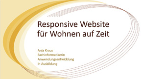

Über mich
Persönliche Daten
- Name:Anja Kraus
- Geboren:19. August 1966
- Geburtsort:Wesel
- Staatsangehörigkeit:deutsch
- Familienstand:verheiratet
Kurzbiografie
Ich bin Web-Entwicklerin
2020 - WordPress Template-Entwicklung, mit PHP, SASS und jQuery bei Krauss Kommunikation GmbH in Herrenberg.
2019 - Erfolgreicher Abschluss meiner Ausbildung zur Fachinformatikerin Anwendungsentwicklung mit Schwerpunkt Web-Entwicklung im Berufsförderungswerk in Schömberg.
2018 - Web-Entwicklung mit PHP, OOP, SASS, Git, Bootstrap, NEOS, Composer während meines Praktikums zur Ausbildung bei Kömpf-Onlineshops in Unterhaugstett.
1998 - 2016 Anzeigenverkauf, Anzeigengestaltung und Zeitungsvertrieb für den Schwarzwälder Botenin unterschiedlichen Geschäftsstellen.
Qualifikationen
SASS, HTML5, CSS3, BEM, WordPress, Templates, Plugins, jQuery, Bootstrap, GIT, JavaScript, C#, PHP, OOP, MVC, MySQL, NPM, Gulp, Git Bash, SCRUM, PostCSS, NEOS, PHP-Storm, Visual Studio Code, Photoshop
Englisch (Niveau B2)
Werdegang
Web-Entwicklerin
Entwicklung von WordPress-Websites mit PHP, jQuery, HTML + SASS sowie Erstellung von Template-Parts, Custom Post Types, PlugIns bei Krauss Kommunikation GmbH, Herrenberg
Weiterbildung
codecademy.com + udemy.com
JavaScript, Npm, Git, Github, SASS, Gulp, PostCSS, BEM, Git Bash, Visual Studio Code
ZertifikateWeiterbildungen: Web-Entwicklerin IHK + Medien Designerin IHK
IHK-Nordschwarzwald, Nagold // www.nordschwarzwald.ihk24.deBei nebenberuflichen Abendlehrgängen der IHK in Nagold habe ich meine ersten Schritte ins Web getan. Dazu habe ich im März 2011 den IHK-Web-Entwickler-Kurs begonnen, damals wurde HTML4 verwendet und JOOMLA war gerade bei Version 1.5. Die Abschlussprüfung fand im Juli 2011 statt. Im Frühjahr 2012 habe ich dann noch den Medien-Design-Kurs belegt. Adobe Creativ Suite 5.5 war zu der Zeit aktuell.
Es hat allerdings noch eine ganze Zeit gedauert, bis ich mich entschieden habe, tatsächlich den Beruf zu wechseln und Web-Entwicklung professionell zu betreiben.
Ausbildung
zur Fachinformatikerin Anwendungsentwicklung
im BFW Schömberg,
inkl. 6 Mon. Praktikum bei Kömpf-Onlineshops in Unterhaugstett.
Weiterlesen
Ausbildung zur
Fachinformatikerin Anwendungsentwicklung
Berufsförderungswerk Schömberg gGmbH // www.bfw-schoemberg.de
Im Sommer 2017 habe ich durch meine Ausbildung zur Fachinformatikerin Anwendungsentwicklung, begonnen mein Hobby zum Beruf zu machen. Der Einstieg fiel mir leicht, weil ich 2011/2012 schon nebenberuflich IHK-Web-Entwickler und IHK-Mediendesigner Weiterbildungen gemacht hatte. Zunächst lernten wir die Grundlagen aus vielen Bereichen, inklusive Netzwerktechnik, PC-Hardware und Projektmanagement, dann folgten kleine Projekte mit C# und MySQL, objektorientiert nach dem MVC-Modell. Ich habe nun eine gute Basis um eigenständig Kentnisse und Fertigkeiten zu erweitern.
Praktikum zur Ausbildung
Kömpf Online Shops, Unterhaugstett // www.koempf24.deIn meinem Praktikum bei KÖMPF Onlineshops GmbH in Bad Liebenzell-Unterhaugstett konnte ich erleben wie ein Onlineshop funktioniert und was da alles so dahinter steckt.
Ich hatte viel Zeit, mir in Ruhe die Grundlagen zu PHP, OOP, GIT, SCSS, Bootstrap, NEOS, Composer, Symfony, Twig usw. zu erarbeiten.
Kaufmännische Angestellte
Kaufmännische Angestellte
Schwarzwälder Bote Mediengesellschaft Südwest GmbH, Nagold // www.schwarzwaelder-bote.deIn 18 Jahren Tätigkeit im Anzeigenverkauf beim Schwarzwälder Boten, habe ich den Wandel vom Papier zur Digitalisierung hautnah mitbekommen. Während 1998 Anzeigen noch auf Papier skizziert, per Post verschickt und Aufträge mit DOS elektronisch erfasst wurden, hielt um die Jahrtausendwende Windows Einzug. Schon kurze Zeit später wurden erste Anzeigenaufträge direkt vor Augen des Kunden digital fertig gestellt. Mehr als 10 Jahre habe ich Anzeigen direkt am PC druckfertig erstellt.
Zu meinem Tätigkeitsbereich gehörte auch der Kundenservice, welcher ein großes Spektrum abdeckte. Vom Zeitungs-, Ticket- oder Bücherverkauf über Reklamationsbearbeitung sowie Betreuung von Kunden in Ausnahmesituationen beispielsweise während der Aufnahme von Traueranzeigen.
Weitere Aufgaben waren z.B. Zeitungsvertrieb mit allen anfallenden Aufgaben, manchmal sogar inklusive Zustellung. Außerdem Telefon-Akquise für den Anzeigenverkauf an Geschäftskunden.
Während dieser 18 Jahre habe ich in unterschiedlichen Schwarzwälder Bote Geschäftsstellen gearbeitet. Begonnen habe ich in Altensteig nur wenige Meter von zu Hause entfernt, damit ich für meine 3 Kinder leicht erreichbar war. Später habe ich auch in den Geschäftsstellen Horb, Neuenbürg und Nagold gearbeitet sowie aushilfsweise auch in Calw.
IHK-Prüfungsprojekt
Abschluss-Prüfung 2019
Für die IHK-Prüfung zur Fachinformatikerin Anwendungsentwicklung wurde eine Web-Applikaton mit Datenbankzugriff entwickelt.
Anforderungen
Die statische Website eines fiktiven kleinen Kunstgeschäftes sollte eine neue Seite zur Bewerbung und Buchung von Kunstkursen bekommen. Die Kurse und deren Teilnehmer sollten über ein Backend verwaltet werden können.
Github
Portfolio
Website für Business-Wohnungen
- HTML5
- responsive
- grid-layout
- SASS
- OnePager
Diese Website war ein Projekt im 1. Ausbildungsjahr. Wurde nach eigener Idee entwickelt,
umgesetzt und dokumentiert. Nach Abschluss musste das Projekt in einer PowerPoint-Präsentation vorgestellt werden.
Hier die dazu erstellte
Dokumentation
und die Projekt-Präsentation

Repo
website
Website FerienWohnung
- Wordpress
- plugins
- nextgen-slider
- online-Buchung
Website zur Vermarktung und Buchung von Ferienwohnungen. 2016 mit Hilfe eines Wordpress-Templates erstellt. Das Template selbst wurde nicht verändert. Online-Buchungen werden durch einen Link zu einem Touristik-Portal ermöglicht.
Projekt Travelsite
- Git, Github + Git Bash
- Node.js, NPM + Webpack
- BEM + PostCss
- mobile-first
- JavaScript, OOP
Dies ist ein Lern-Projekt und wurde im Rahmen eines Web Developer Kurses von Brad Schiff auf udemy.com erstellt.
Ziel war das Erlernen eines professionellen Workflows über Console (Git Bash) und VS Code mit Git, Gulp (z.B. Gulp-Watch), NPM, Node.js, Javascript, PostCss, Webpack...
PHP-Projekt im Praktikum
- PHP, SQL
- Daten per JSON-Api
- OOP
- NEOS
- Twig
Aktuelle Fußball-Daten sollten per JSON-API abgerufen
und in eine Tabelle geschrieben werden. Dargestellt erst mit HTML+CSS,
später mit Twig und abschließend mit NEOS.
Liga und Mannschaft mussten wählbar sein.
SASS-Projekt Natours
- SASS (Grundlagenkurs)
- Node.js, NPM
- Animationen
- Grid
- BEM, Emmet
Dies ist ein Lern-Projekt und wurde im Rahmen eines SASS-Kurses von Jonas Schmedtmann auf udemy.com erstellt. Diese Seite wurde zu großen Teilen als Template für anjakraus.de benutzt.
Website für Massagestudio
- NEOS
- eigenes Template
- OOP
- Composer
- NodeTypes
Ende 2018 im Praktikum bei Kömpf-Onlineshops anhand eines Flyers erstellt. Hier wurden eigene NodeTypes geschrieben und ein passendes Template erstellt.